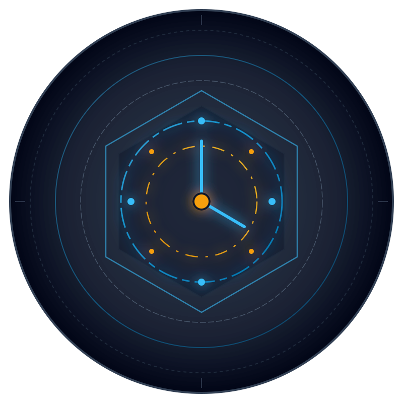

SHM — Support Hours Manager
Visão Executiva & Arquitetura do Sistema
Sistema corporativo de governança técnica, bilhetagem de horas de suporte, auditoria forense criptográfica e gestão de contratos.
SHM 2.6 Branding
98% Homologado
Django 5 + React 19
Pilha Tecnológica (Tech Stack)
Desenvolvido com foco em resiliência, determinismo pericial e experiência fluida para clientes e desenvolvedores:
Backend
Python 3.12, Django 5.2, Django REST Framework, PostgreSQL com gatilhos nativos de imutabilidade.
Frontend
React 19 SPA, TypeScript, Vite, Tailwind CSS, TanStack Query e rota pericial pública.
Inovação: Trilha de Auditoria Forense
O SHM implementa garantia matemática de imutabilidade pericial:
- Hash Chaining RFC 8785: Encadeamento criptográfico SHA-256 de cada evento pericial em ordem cronológica.
- Bloqueio de UPDATE/DELETE: Gatilho nativo PostgreSQL e verificação ORM impedem qualquer alteração do passado.
- Selo Noturno Diário: Rotina automática diária consolida partições e lacra o hash raiz da cadeia.
- Estação Pericial: Página dedicada com exportação e script offline de auditoria independente.
Governança Contratual & Ciclos Técnicos
Controle financeiro e técnico estrito de horas apontadas:
- Ledger Imutável: Débitos de horas ocorrem atomicamente apenas após o aceite formal do cliente.
- Trava de Tolerância (+30%): Bloqueia o aceite caso as horas reais excedam 30% da estimativa sem aditivo.
- Migração Assistida de Saldo: Reaproveita horas remanescentes de contratos expirados em novas contratações.
- Magic Links Públicos: Clientes aprovam cadastros e aceitam ordens de serviço sem barreira de senha.
Métricas & Indicadores
Panorama quantitativo do projeto e cobertura de engenharia reversa:
1 / 5
 SHM Docs
SHM Docs